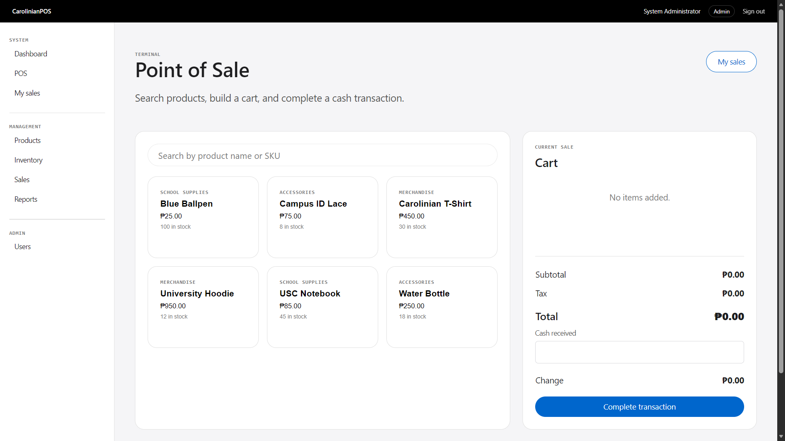
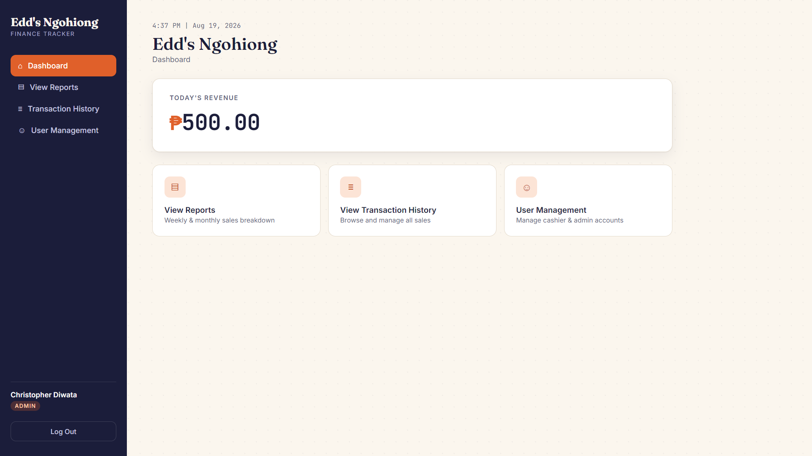

project / 001
web application
CarolinianPOS
↗
A web-based POS system for University of San Carlos as an academic project
during Web Development 1 class. It includes authentication, role-based access, POS checkout, printable
receipts, products, inventory adjustments, sales history, voids, reports, and admin user management.
HTMLCSSJavaScriptPHPMySQLpoint of
sale

project / 002
finance tracker
Edd's Ngohiong
↗
A web-based Sales Management System for the food business Edd's Ngohiong, built
during Information Management II class as a final project. It includes signup/login, role-based dashboards,
sales entry (Cashier), sales report (Admin), transaction history (Admin), and user management (Admin).
HTMLCSSJavaScriptPHPMySQLmanagement
system